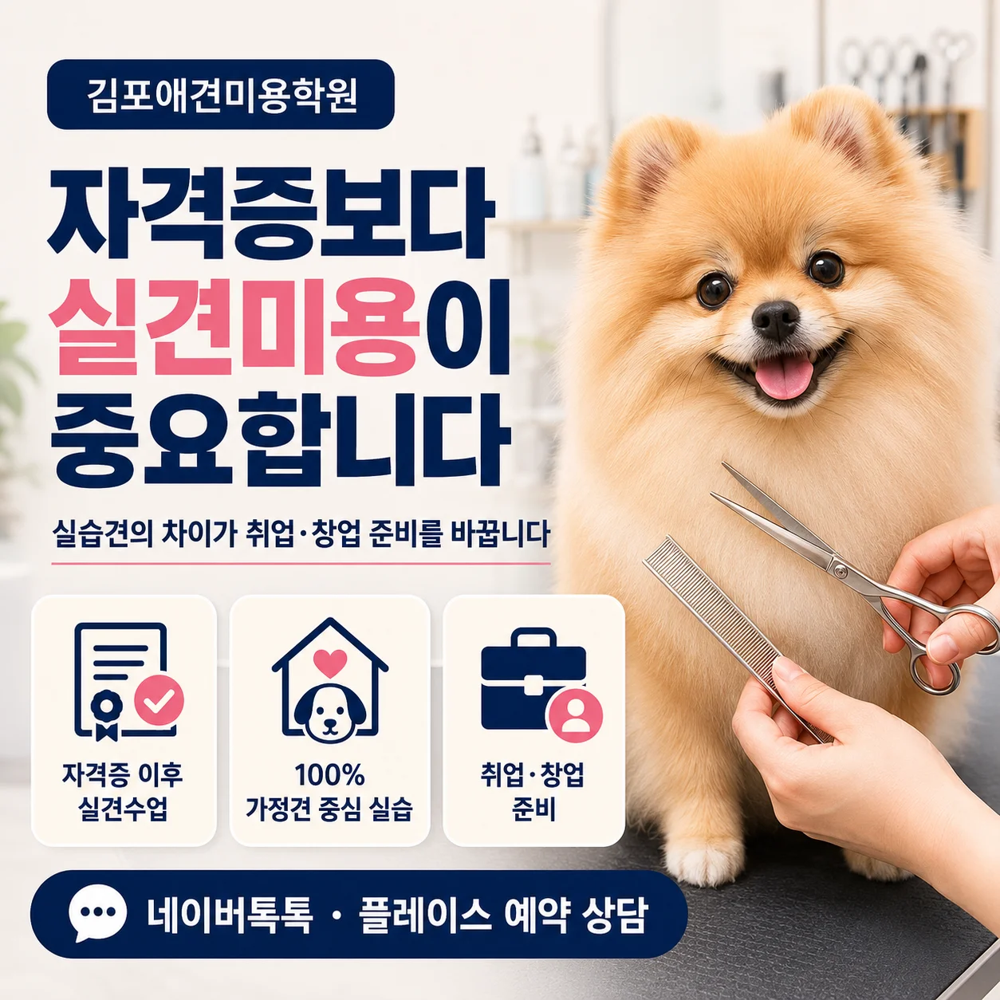

김포애견미용학원 비교, 자격증보다 실견미용이 중요한 이유

- 애견미용자격증은 기본기를 배우는 과정이지만 취업이나 창업까지 생각한다면 강아지를 얼마나 다양하게 경험했는지가 중요합니다.
- 실견수업도 어떤 강아지를 대상으로 진행하는지에 따라 경험의 성격이 달라집니다.
- 농장견·상주견·가정견은 각각 장단점이 있으며, 애견미용샵 환경에 가까운 경험을 원한다면 보호자와 생활하는 가정견 실습 여부를 확인해보는 것이 좋습니다.
- 이바우펫 애견미용학원은 100% 가정견 중심 실견수업을 주요 교육 방향으로 운영합니다.
김포애견미용학원 자격증만 취득하면 취업할 수 있을까요?
김포애견미용학원 등록을 알아보다 보면 가장 먼저 확인하게 되는 것이 자격증 과정입니다.
3급은 얼마나 걸리는지, 2급까지 준비할 수 있는지, 시험은 어떻게 진행되는지 등을 먼저 묻게 됩니다. 자격증이 애견미용을 처음 배우는 사람에게 중요한 기준인 것은 맞습니다.
다만 취업이나 창업까지 목표로 한다면 "자격증을 취득한 뒤 어떤 수업을 하게 되는가?"를 더 중요하게 볼 필요가 있습니다. 애견미용샵에서 만나는 강아지는 시험을 위해 반복적으로 연습했던 상황과 다르기 때문입니다.
자격증은 기본기, 실견미용은 현장 경험
김포애견미용학원 애견미용자격증 과정에서는 가위 사용법, 클리핑, 기본적인 형태 잡기 등 미용의 기초를 배우게 됩니다.
하지만 현장에서는 같은 견종이라도 상태가 모두 다릅니다. 어떤 강아지는 털이 심하게 엉켜 있고, 어떤 강아지는 피부가 예민합니다. 미용 테이블 위에서 얌전히 있는 반려견도 있지만 낯선 장소를 불안해하거나 계속 움직이는 강아지도 많습니다. 보호자가 원하는 스타일 역시 다릅니다.
그래서 취업 면접에서도 단순히 자격증 소지 여부뿐 아니라 실제로 몇 마리 정도 미용해봤는지, 어떤 견종을 경험했는지, 어느 정도까지 직접 작업할 수 있는지가 중요한 질문이 됩니다.
창업이라면 더욱 그렇습니다. 예약을 받고 처음 보는 반려견을 직접 미용해야 하기 때문에 자격증 과정에서 배운 기술을 강아지에게 적용해본 경험이 필요합니다.
실견수업도 모두 같은 것은 아닙니다
김포애견미용학원 교육을 비교할 때 "실견수업이 있나요?"라고만 질문하면 충분하지 않습니다. 실견수업에 어떤 강아지를 활용하는지에 따라 수강생이 경험하는 상황이 달라질 수 있기 때문입니다.
| 실습견 유형 | 특징 | 경험할 수 있는 부분 | 확인할 점 |
|---|---|---|---|
| 농장견 | 일정한 경로를 통해 실습에 투입 | 반복적인 실습 기회 | 견종·관리상태·생활환경 다양성 |
| 상주견·모델견 | 학원에서 지속적으로 관리 | 비교적 익숙한 환경에서 반복 연습 | 실제 고객견과 행동 차이 가능성 |
| 가정견 | 실제 보호자와 생활하는 반려견 | 견종·성격·모질·관리상태·미용주기의 다양성 | 안전관리와 보호자 요청 확인 과정 |
← 표를 옆으로 스크롤하면 전체 항목을 확인할 수 있습니다.
어느 한 방식이 모든 수강생에게 무조건 좋다고 단정할 수는 없습니다.
초보 단계에서는 비교적 익숙한 모델견을 통해 기본 동작을 반복적으로 익히는 것이 도움됩니다. 반면 취업이나 창업 직전에는 고객견과 비슷한 다양한 상황을 경험하는 것이 중요해집니다.
왜 가정견 실습을 확인해야 할까요?
가정견은 보호자와 함께 생활하기 때문에 생활환경과 관리 상태가 모두 다릅니다.
예를 들어 같은 포메라니안이라도 한 달마다 관리받은 강아지와 몇 달 동안 미용하지 않은 강아지는 털 상태가 다릅니다. 푸들도 얼굴 스타일을 짧게 원하는 보호자가 있는 반면 테디베어컷처럼 둥근 스타일을 원하는 경우가 있습니다.
또 어떤 강아지는 드라이 소리를 무서워하고, 발을 만지는 것을 싫어하거나 얼굴 주변 미용에 민감하게 반응하기도 합니다.
이런 다양한 상황을 경험하면서 수강생은 단순히 정해진 미용 순서를 반복하는 것이 아니라 강아지의 상태를 보고 미용 방법을 판단하는 과정을 배웁니다. 애견미용샵 취업이나 창업을 준비한다면 이러한 경험이 중요한 이유입니다.
가정견 실습에서는 보호자 요청도 중요합니다
가정견 중심 실습의 또 다른 특징은 단순히 강아지만 보는 것이 아니라 보호자가 원하는 미용 결과를 이해하는 과정까지 연결될 수 있다는 점입니다.
현장에서는 "짧게 잘라주세요"라는 말도 보호자마다 기준이 다릅니다. 얼굴은 둥글게 원하는지, 귀는 길게 남길 것인지, 몸은 몇 mm로 정리할 것인지 등을 확인해야 합니다.
털 엉킴이나 피부 상태 때문에 요청한 스타일 그대로 진행하기 어려운 경우에는 현재 상태에서 가능한 범위를 설명하는 것도 필요합니다.
취업이나 창업이 목표라면 이러한 보호자 응대와 상담 흐름까지 경험할 수 있는지 김포애견미용학원 상담에서 확인해보는 것이 좋습니다.
이바우펫은 100% 가정견 중심 실견수업
김포애견미용학원 교육을 알아보다 실견수업을 중요하게 보고 있다면 이바우펫 애견미용학원의 교육방식도 함께 비교해볼 수 있습니다.
이바우펫은 100% 가정견 중심 실견수업을 주요 교육 방향으로 운영합니다. 자격증 과정에서 기본기를 익힌 뒤 실제 보호자와 생활하는 반려견을 대상으로 목욕, 드라이, 위생미용, 클리핑, 가위컷 등 단계별 실습을 경험하는 방식입니다.
가정견마다 견종과 모질, 체형, 성격, 미용 경험이 다르기 때문에 취업이나 창업을 준비하면서 다양한 상황에 대응하는 연습을 하는 데 도움이 됩니다.
따라서 등록 상담을 받을 때는 단순히 "실견수업이 있다"는 설명보다 실습견이 어떤 강아지인지, 수강생이 어느 범위까지 직접 참여하는지까지 확인해보는 것이 좋습니다.
취업·창업 준비라면 이런 부분까지 비교하세요
- 애견미용자격증 이후 실견수업이 이어지는가
- 농장견·상주견·가정견 중 어떤 실습견을 사용하는가
- 가정견 실습 비중은 어느 정도인가
- 목욕·드라이부터 가위컷까지 직접 경험할 수 있는가
- 다양한 견종을 경험할 수 있는가
- 강사의 개별 피드백을 받을 수 있는가
- 실견 포트폴리오 준비가 가능한가
- 보호자 상담이나 현장 응대까지 배울 수 있는가
- 취업 준비 과정이 별도로 연결되는가
- 창업을 위한 실무교육이나 상담이 가능한가
특히 실견수업을 비교할 때는 실습 횟수만큼 실습의 내용도 중요합니다.
같은 강아지를 반복적으로 경험하는 것과 매번 다른 상태와 성격의 가정견을 경험하는 것은 배우는 내용이 달라질 수 있기 때문입니다.
자격증 취득을 목표가 아니라 출발점으로
애견미용자격증은 취업이나 창업을 위한 중요한 첫 단계입니다.
하지만 현장에서 요구되는 능력은 자격증 하나만으로 완성되기는 어렵습니다.
강아지의 상태를 파악하고, 안전하게 보정하며, 견종과 모질에 맞춰 미용하고, 보호자가 원하는 스타일을 이해하는 과정은 반복적인 실견경험을 통해 익혀가는 부분입니다.
김포애견미용학원을 알아보고 있다면 자격증 과정만 비교하기보다 자격증 이후 실견수업이 어떻게 진행되는지, 어떤 강아지를 대상으로 실습하는지까지 꼭 확인해보세요.
취업과 창업까지 생각하고 있다면 이바우펫 애견미용학원의 가정견 중심 실견수업도 하나의 비교 기준으로 살펴볼 수 있습니다.
자주 묻는 질문
결론
김포애견미용학원 등록을 선택할 때 애견미용자격증 취득 여부만 확인하면 실제 취업이나 창업 준비에 필요한 부분을 놓칠 수 있습니다.
자격증 → 실견미용 → 다양한 견종 경험 → 보호자 요구 이해 → 취업·창업 준비까지 전체 흐름을 확인해보는 것이 중요합니다.
특히 실견수업이 있다면 농장견인지, 상주견인지, 가정견인지까지 비교해보세요.
실제 고객 반려견과 유사한 다양한 상황을 경험하고 싶다면 100% 가정견 중심 실견수업을 운영하는 이바우펫 애견미용학원도 함께 상담해보고 본인의 목표와 맞는지 비교해보는 것이 좋습니다.
핵심 포인트 정리
- 자격증은 기본기이며 실견경험이 중요
- 실견수업의 유무보다 실습견 유형까지 확인
- 농장견·상주견·가정견은 경험의 성격이 다름
- 가정견은 다양한 견종과 관리 상태를 경험하기 용이
- 취업·창업 목표라면 보호자 응대까지 확인
#김포애견미용학원 #김포애견미용 #애견미용학원 #애견미용자격증 #애견미용취업 #애견미용창업 #실견미용 #가정견실습 #이바우펫